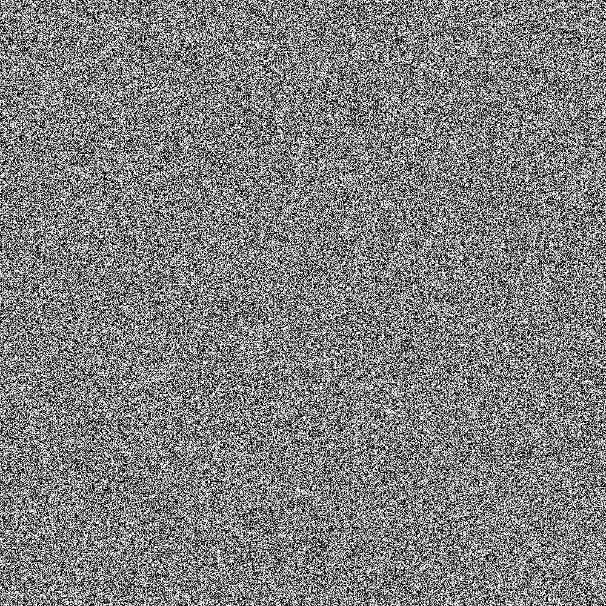
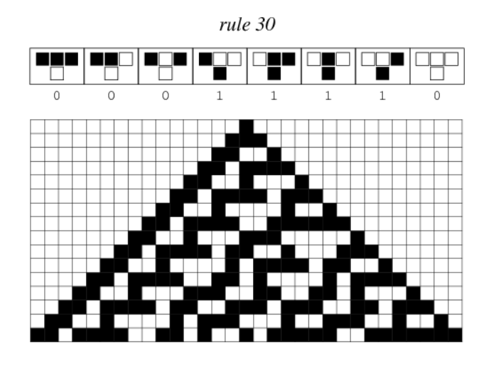
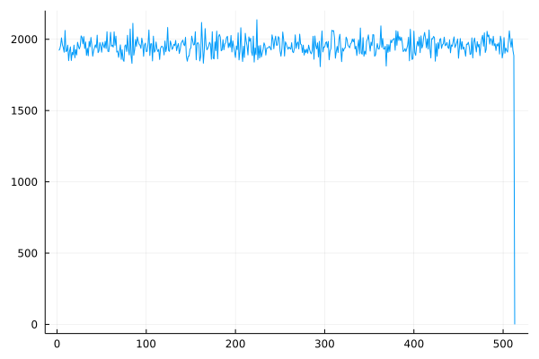
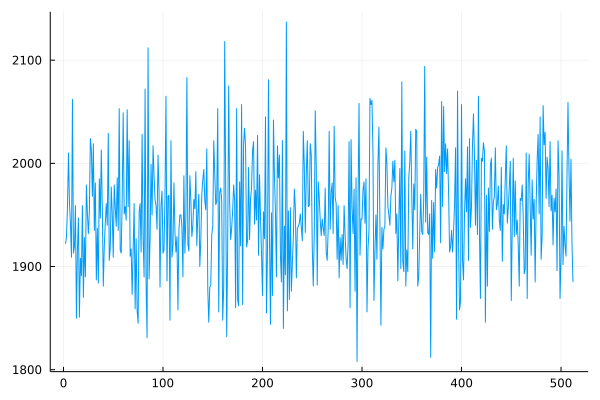

One thing that makes cellular automata especially fun is that you can make your own computational experiments with them.
if you are interested in any of these questions or in collaborating with me to try to answer them pease don't hesitate to contact me!!
Experiment #1: Rule 30's central column
Since some time ago I have been conducting some experiments regarding the middle column of
Rule 30.
Is the sequence defined by its values periodic? Are there the same number of 1's and 0's? Some of these questions are addressed more deeply
here, where Stephen Wolfram has offered 30,000 USD for any answers.
I have finally calculated 1,000,000 values of the central column of Rule 30
 1 million values of R30's central column.
as well as the
first 100 strings that do not appear in that sequence.
UPDATE: the sequence below correspond to the first 100 strings that are not contained in the first 500,000 values of the central column of Rule 30. For the list of
first 100 strings that do not appear in the first 1,000,000 values of Rule 30's central column see here.
By looking at the array of strings not contained in the sequence, one finds some interesting patterns. Here are, for example, the last 82 strings and their corresponding values when beinginterpreted as binary numbers:
65558 = 10000000000010110
65701 = 10000000010100101
65723 = 10000000010111011
65840 = 10000000100110000
65893 = 10000000101100101
65939 = 10000000110010011
65943 = 10000000110010111
65954 = 10000000110100010
65959 = 10000000110100111
65961 = 10000000110101001
65981 = 10000000110111101
66015 = 10000000111011111
66128 = 10000001001010000
66157 = 10000001001101101
66165 = 10000001001110101
66187 = 10000001010001011
66191 = 10000001010001111
66224 = 10000001010110000
66342 = 10000001100100110
66361 = 10000001100111001
66364 = 10000001100111100
66536 = 10000001111101000
66549 = 10000001111110101
66572 = 10000010000001100
66594 = 10000010000100010
66615 = 10000010000110111
66629 = 10000010001000101
66753 = 10000010011000001
66761 = 10000010011001001
66809 = 10000010011111001
66874 = 10000010100111010
66876 = 10000010100111100
66964 = 10000010110010100
67095 = 10000011000010111
67127 = 10000011000110111
67134 = 10000011000111110
67261 = 10000011010111101
67265 = 10000011011000001
67277 = 10000011011001101
67341 = 10000011100001101
67375 = 10000011100101111
67452 = 10000011101111100
67482 = 10000011110011010
67518 = 10000011110111110
67572 = 10000011111110100
67651 = 10000100001000011
67719 = 10000100010000111
67736 = 10000100010011000
67739 = 10000100010011011
67749 = 10000100010100101
67783 = 10000100011000111
67834 = 10000100011111010
67871 = 10000100100011111
67875 = 10000100100100011
67896 = 10000100100111000
67897 = 10000100100111001
67924 = 10000100101010100
67928 = 10000100101011000
67972 = 10000100110000100
67987 = 10000100110010011
68077 = 10000100111101101
68126 = 10000101000011110
68135 = 10000101000100111
68144 = 10000101000110000
68158 = 10000101000111110
68218 = 10000101001111010
68220 = 10000101001111100
68226 = 10000101010000010
68258 = 10000101010100010
68420 = 10000101101000100
68511 = 10000101110011111
68604 = 10000101111111100
68612 = 10000110000000100
68675 = 10000110001000011
68773 = 10000110010100101
68904 = 10000110100101000
68982 = 10000110101110110
69081 = 10000110111011001
69084 = 10000110111011100
69208 = 10000111001011000
69231 = 10000111001101111
69335 = 10000111011010111
69339 = 10000111011011011
69345 = 10000111011100001
Notice how the first couple of them begin with the string 100000000xxxxxxxx, then the following terms begin with the string 100000001xxxxxxxx, then 10000001xxxxxxxxx, then 10000001xxxxxxxxxx, etc. It seems like
teh digit 1 at the end is simply shifting to the left. It seems reasonable, however, that if the string 10000xxxxxxxxxxxx does not seem to appear, then the value of x doesn't really matter and the structure of the data comes simply
because I'm searching for the numbers in order. I suspect, however, that with more digits of the middle column of Rule 30 strings of the form 10000xxxxxxxxxxxx will appear and delete many of the current candidates from the list.
It is however interesting to see if some of these numbers survive billions and billions of iterations of Rule 30. Unfortunately I don't have enough computational power to check this, although I'm optimistic that through many small iterations
every now and then I will be able to collect a significant amount of data and hopefully conjecture some interesting results.
66549 = 10000001111110101
67341 = 10000011100001101
67518 = 10000011110111110
69823 = 10001000010111111
73465 = 10001111011111001
74809 = 10010010000111001
75165 = 10010010110011101
75476 = 10010011011010100
76869 = 10010110001000101
83545 = 10100011001011001
85973 = 10100111111010101
88394 = 10101100101001010
92087 = 10110011110110111
94647 = 10111000110110111
98209 = 10111111110100001
98806 = 11000000111110110
100002 = 11000011010100010
101805 = 11000110110101101
102049 = 11000111010100001
105136 = 11001101010110000
105971 = 11001110111110011
107178 = 11010001010101010
112247 = 11011011001110111
118890 = 11101000001101010
121147 = 11101100100111011
121543 = 11101101011000111
122117 = 11101110100000101
123451 = 11110001000111011
128995 = 11111011111100011
129170 = 11111100010010010
130237 = 11111110010111101
131129 = 100000000000111001
131137 = 100000000001000001
131166 = 100000000001011110
131199 = 100000000001111111
131300 = 100000000011100100
131533 = 100000000111001101
131545 = 100000000111011001
131562 = 100000000111101010
131569 = 100000000111110001
131725 = 100000001010001101
131732 = 100000001010010100
131787 = 100000001011001011
131820 = 100000001011101100
131838 = 100000001011111110
131919 = 100000001101001111
131923 = 100000001101010011
132022 = 100000001110110110
132044 = 100000001111001100
132070 = 100000001111100110
132077 = 100000001111101101
132140 = 100000010000101100
132157 = 100000010000111101
132176 = 100000010001010000
132225 = 100000010010000001
132257 = 100000010010100001
132303 = 100000010011001111
132321 = 100000010011100001
132324 = 100000010011100100
132329 = 100000010011101001
132342 = 100000010011110110
132398 = 100000010100101110
132417 = 100000010101000001
132454 = 100000010101100110
132491 = 100000010110001011
132508 = 100000010110011100
132551 = 100000010111000111
132573 = 100000010111011101
132617 = 100000011000001001
132723 = 100000011001110011
132801 = 100000011011000001
132869 = 100000011100000101
133098 = 100000011111101010
133099 = 100000011111101011
133112 = 100000011111111000
133135 = 100000100000001111
133145 = 100000100000011001
133148 = 100000100000011100
133198 = 100000100001001110
133210 = 100000100001011010
133257 = 100000100010001001
133266 = 100000100010010010
133272 = 100000100010011000
133432 = 100000100100111000
133456 = 100000100101010000
133490 = 100000100101110010
133505 = 100000100110000001
133507 = 100000100110000011
133637 = 100000101000000101
133645 = 100000101000001101
133718 = 100000101001010110
133788 = 100000101010011100
133816 = 100000101010111000
133821 = 100000101010111101
133830 = 100000101011000110
133925 = 100000101100100101
133928 = 100000101100101000
133936 = 100000101100110000
133978 = 100000101101011010
134121 = 100000101111101001
Notice how the vast majority of terms that did not appear in the first 500,000 values of Rule 30's central column appear in the first 1 million values . Will this happen with any string?
Back to page index
-------------------------------------------------------------------------------------------------------------
Experiment #2: An algorithm for calculating square roots
Some time ago I described
an algorithm for cumputing sqrt(2) using
Pascal's Triangle. Strictly speaking this is not a cellular automata
(although one can partially obtain it by computing
Rule 60 mod k for a large enough k). Nevertheless I've decided to include it here because I find it very interesting and worth exposing.
Rule 60 is one of the so called "aditive" cellular automata which have
very nice properties (like linearity and being easily described by generating functions).
Anyways, the algorithms reads as follows:
- 1. Compute the n-th row of Pascal's Triangle (the larger the n, the better).
- 2. Ennumerate the elements of this row, starting from 0.
- 3. For all elements x in even positions 2k, consider the sum of x*2^(k) for all x in the given row. Denote this sum by X.
- 4. For all elements y in odd positions 2k+1, consider the sum of y*2^(k) for all y in the given row. Denote this sum by Y.
- 5. Then sqrt(2) is approximately X/Y.
A small example always helps clarifying things. Let n = 5:
- 1. The 5-th row of Pascal's Triangle reads 1,5,10,10,5,1 .
- 3. X = 1*2^0 + 10*2^1 + 5*2^2 = 41
- 4. Y = 5*2^0 + 10*2^1 + 1*2^3 = 33
- 5. X/Y = 41/33 = 1.242424... which is APPROXIMATELY sqrt(2)
For n=10 we get X/Y = 1.4142131979695431 which is not too bad.
One can give an elementary proof of this algorithm by considering the continous fraction of sqrt(2) (TRY IT!)
Another interesting thing is that this algorithm is generalizable to sqrt(n) (and here is where cellular automata come into play):
Instead of Pascal's Triangle, we are going to run Rule 60 mod k (for large k) starting with the initial condition of a single cell with the value n.
We then repeat the described algorithm in this new setting and we get an approximation of sqrt(n).
For n=3 and using the 10-th row of Rule 60 we get X/Y = 1.7320261437908496..., and sqrt(3) = 1.732050807...
Back to page index
-------------------------------------------------------------------------------------------------------------
Experiment #3: Storing large values of Rule 30's rows
The recursive nature of cellular automata make them computationally costly to calculate. However, if one has stored the values of a given row, then one can
calculate all of the following rows of the automata (with
this program). That's why I've calculated several rows(
rows number 100,000; 200,000; 300,0000; 400,000; 500,000; 524,999; 555,000; 675,000; 700,000;
800,000; 820,000; 840,0000 and finally
1,000,000) in index format, which means that
I'm storing the indices of the cells of value 1. If we start with a single cell with the value 1, and we assign that cell the index 0, then the cell directly to the left will have the index -1 and the cell directly to its right will have the value 1.
In this way, the array [-1,0,1] codifies the row with values 111, where the middle 1 lays just below our lonely initial condition valued 1 in index 0. This makes it computationally advantageous to work with since,
given an indexed array, knowing the value of the central column at that generation reduces to simply asking: is 0 in the array? If so, then the central column has value 1 (since the array stores the indices of the cells which have value 1), otherwise the central column has value 0.
For clarity I'll give an example. Consider Rule 30 with the initial condition of a single cell with the value 1:
 Rule 30
Here, a cell with value 1 is depicted black, and a cell with value 0 is depicted white. The row index arrays would read:
- row0 = [0]
- row1 = [-1,0,-1]
- row2 = [-2,-1,2]
- row3 = [-3,-2,0,1,2,3]
and so on.
Back to page index
-------------------------------------------------------------------------------------------------------------
Experiment #4: A random number generator based on Rule 30's central column.
(You can find the algorithm described below here.)
Given the following image
1 million values of R30's central column.
one can think of the following algorithm for, given k>0, generating a random number between 0 and 2^k:
- Choose a random point (x,y) from the image above.
- Choose a random direction (right, diagonal right up, up, diagonal left up, left, diagonal left down, down, diagonal right down)
- Read k bits starting from (x,y) and in the chosen direction.
A few consideration for the implementation of the algorithm:
- The image is 1,000 x 1,000 pixels, so the random point (x,y) should be chosen in a way that x and y live in the interval (k,1000-k) in order to be able to read k pixels in any direction.
- The directions can simpy be encoded by numbers from 1 to 8.
- I belive this algorithm to be highly dependant on the choice of (x,y), so for benchmarking I'll just use Julia's random number generator for choosing the initial values of (x,y).
In practice I believe a good idea would be to ask the user for two random x,y or get them from the system somehow.
I ran the algorithm 11 million times selecting numbers of maximum 10 bits (from 0 to 512 in base 10) and got quite a nice uniform distribution,
which seems to indicate that the the algorithm seems to produce random uniform numbers. (DISCLAIMER: SAYING THAT THE FACT THAT THE ALGORIHTMS SEEMS
TO PRODUCE UNIFORM RANDOM OUTPUTS IMPLIES THAT THE VALUES OF THE CENTRAL COLUMN OF RULE 30 ARE RANDOMLY AND UNIFORMILY DISTRIBUTED ARE
BIG WORDS
WHICH I HAVE NOT SAID ).
Anyway, here's a plot of my benchmarks:
 Number of appearances of each number from 1 to 512 for 11 million runs.
 Zoom in the interesting region.
The sudden fall to 0 is explained by the fact that 512 = 2^9 is the first number to have 10 bits and the runs were made by taking only 9 bits.
Last update: 14.11.2024